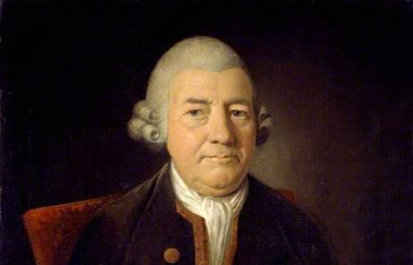

Branding
Creating a brand that reflects me
Through this project I created a monogram, a wordmark, a visual marque and a set of brand guidelines.
Skills:
- Sketch
- HTML
- CSS
Always start on Paper
To begin I sketched out ideas of what what I wanted my monogram to look like. I had multiple approaches to this ranging from an industrial style to a more feminine and elegant style.


Digitalising
I choose two monogram ideas and digitalised them, however I decided to go for the more curvy and elegant looking one as I think this is more delicate and femnine looking, like me. I then added colour to my monogram. I decided to choose the colours gold and silver with a gradient, so my monogram looks like a ribbon overlapping.


I then wanted to choose a wordmark that looked good beside my monogram. I wanted a simplistic wordmark because I knew a hand written font would clash with my monogram. After sketching out fonts and realising they looked too decorative I went to google fonts to find more simplistic ones. I then decided to use the font, 'Source Sans Pro'. This is a minimalistoc and simple font. I made some alterations to the two t's as i wanted them to look like two corsses and I added an illustration between two m's


I found coming up with a visual marque very difficult. So I used a wordmap I created at the start of the project to reflect on what my likes and dislikes are. Illustrating is a strength of mine and something I enjoy. Therefore, I sketched out some ideas and digitalised them. At fist I didn't include my monogram in my visual marque, but I thought it would be a nice touch. As you can see elements of my visual marque are on my wordmark.


Bringing it all together
Now that I've created a monogram, a wordmark and a visual marque, I have put them all togetehr to create a set of brand guidelines and a website. You can view them below.
